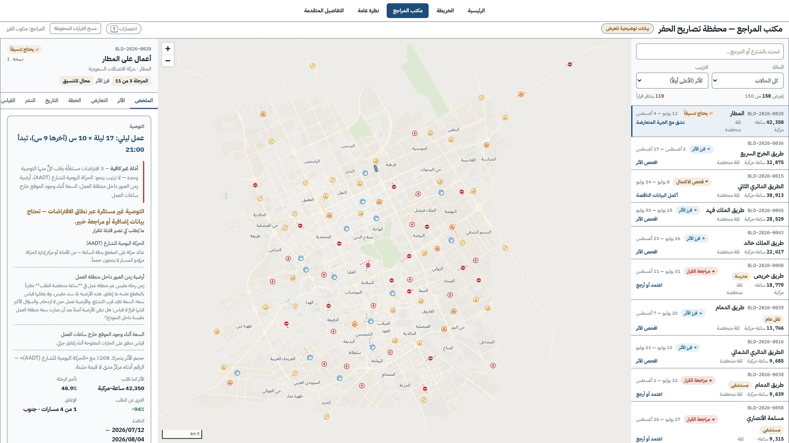
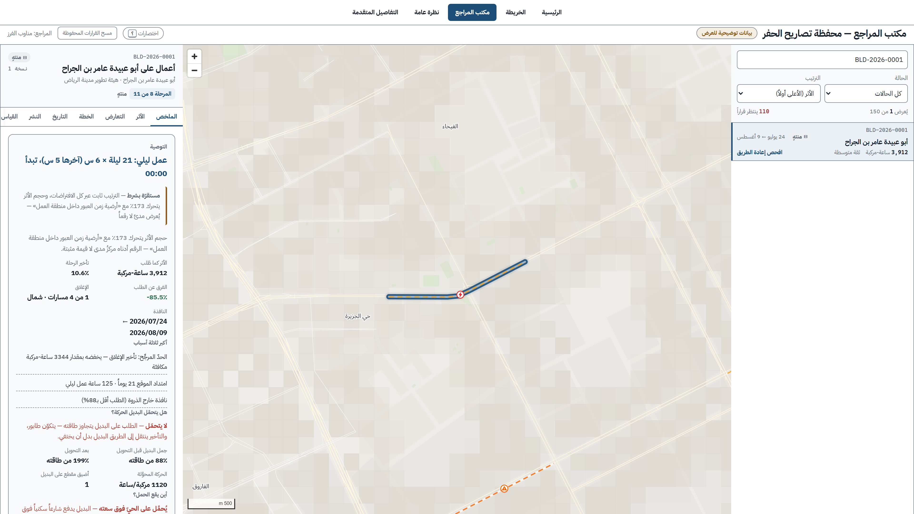
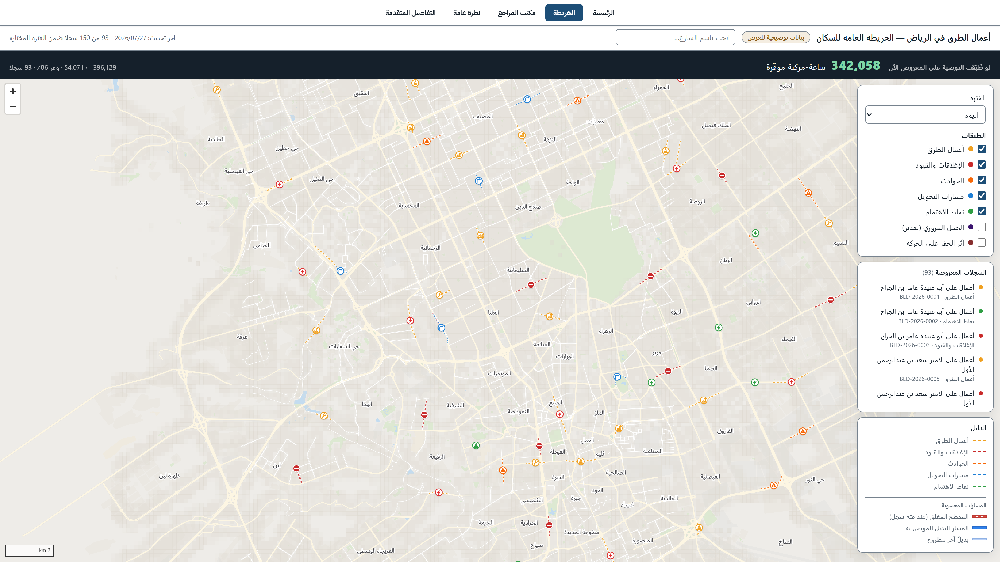
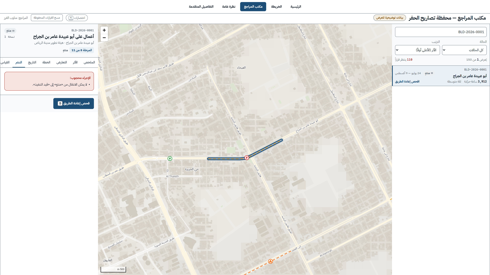
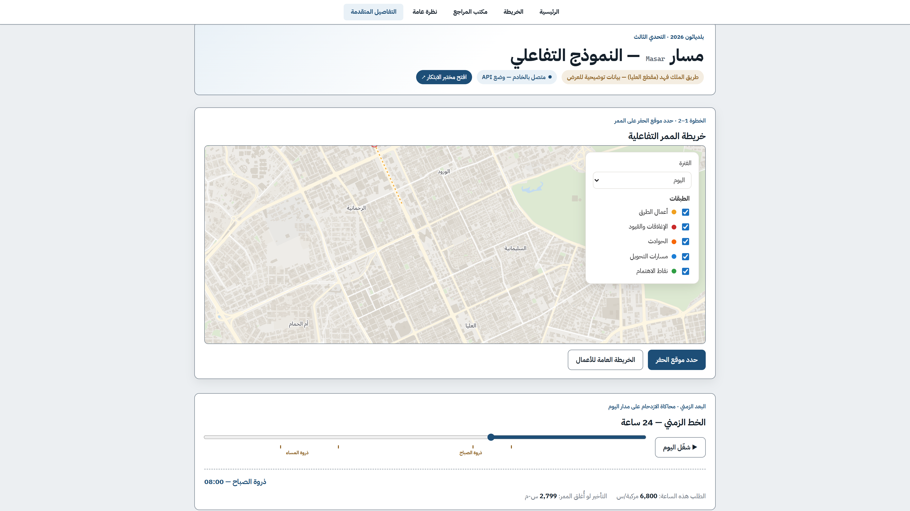
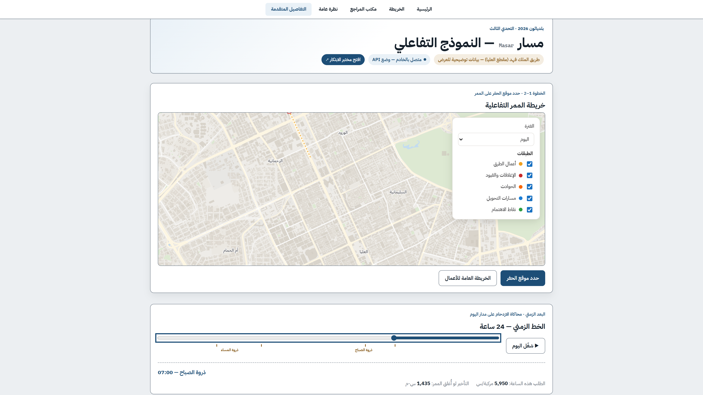
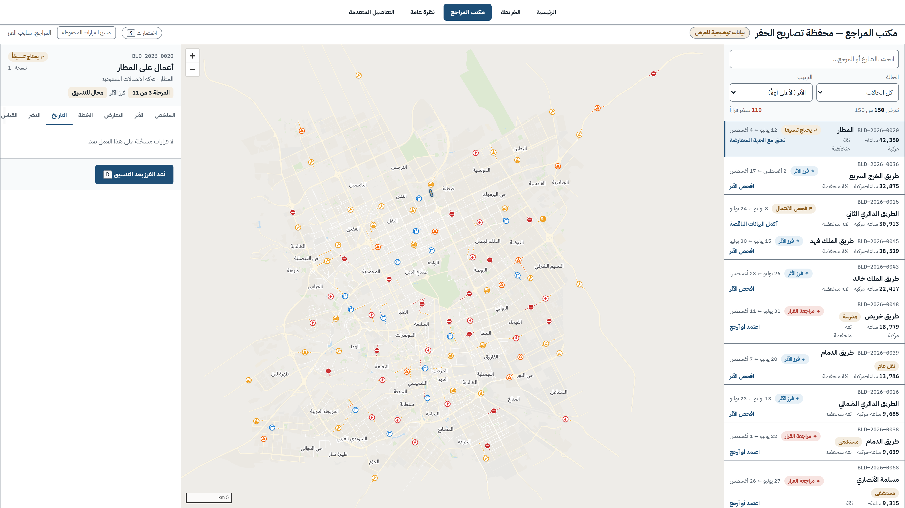

«الطريق العام مغلق،
فصار الزحام عند بيتي»
قول ساكن — نقله منظّم الفعالية
كل حفرية تسأل السؤال نفسه:
متى يكون الأذى أخف؟
حِمل شارع الحيّ بعد إغلاق قربه
12
٪
العلامة = سعة الشارع الكاملة
متوقَّع من تجربة
أسوأ حالة في المحفظة
100
٪
متوقَّع من تجربة
ساعة-مركبة يكلّفها تصريح واحد
0
محرك مسار · محفظة العرض
أرقام لا تُعرف اليوم إلا بعد الشكوى
ماذا لو عرفنا الأثر
قبل التوقيع، لا بعده؟
قرار قبل الحفر، لا بعده

150 تصريح حفر — مكتب واحد
كل تصريح يمرّ من هنا أولاً
بيانات توضيحية · شوارع رياض حقيقية

التوصية: عمل ليلي بدل نهاري
ساعة-مركبة تأخيراً
3,912
وفر 3,344 ساعة-مركبة — أقل بنسبة 85.5 بالمئة
متوقَّع من تجربة
BLD-2026-0001 · أعمال على أبو عبيدة عامر بن الجراح

بديل حقيقي لكل إغلاق تقريباً
118 من 134 سجلاً — 3.7 دقائق إضافية وسيطاً
118,893 عقدة · 174,113 ضلعاً — مُثبَت عملياً
تصريح اتصالات
تصريح مياه
حفر واحد منسَّق
لا يُحفر الشارع مرتين
الحفر الموحّد يوفّر ما بين 25 و33 بالمئة
مُتحقَّق خارجياً — GAO / FHWA

النظام يمتنع — ويشرح السبب
حين لا يصحّ الإجراء، لا ينفَّذ
من يفحص لا يعتمد · وكل قرار موقَّع ومؤرَّخ
والخريطة نفسها تُنشر للسكان
شفافية قبل أن تُغلق الشوارع


رقم يتغيّر مع كل مُدخل
لا لقطة مسجّلة ولا رقم مزروع

سجل قرارات مؤرَّخ
قِسنا مساراتنا مقابل محرك مستقل
OSRM — مفتوح المصدر
مُتحقَّق خارجياً
كل رقم يحمل تصنيف دليله
مُثبَت عملياً
مُتحقَّق خارجياً
متوقَّع من تجربة
سيناريو توسّع مشروط
قرار واحد،
قبل كل حفرية
بلدياثون 2026 — التحدي الثالث
مسار — فيلم الإطلاق
75 ثانية · بصوت — يعمل أيضاً صامتاً
تشغيل ▶